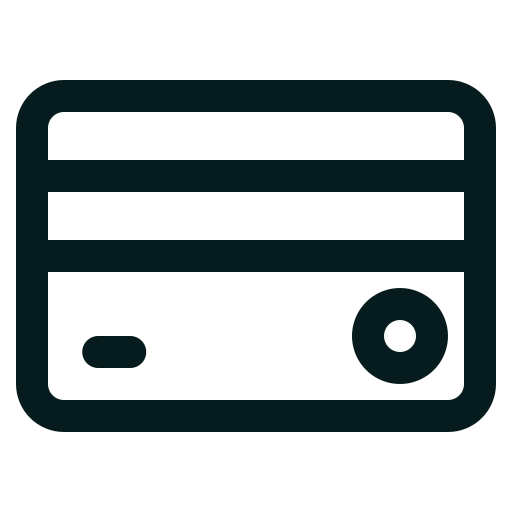
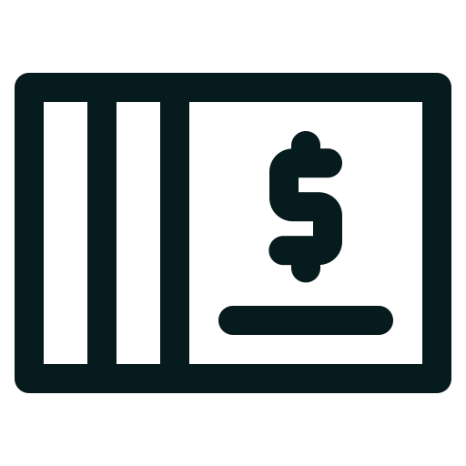
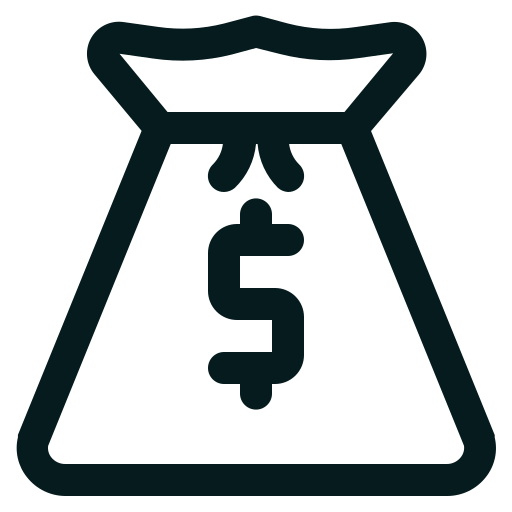

Financial
Bank Account
Choosing a Bank
Account Opening
Direct Deposit
Debit Card
Checkbook
Bank Fees
Mobile Banking
Money Transfer
FAQ
There are two primary types of bank accounts in the United States’ banking system: checking accounts and savings accounts. Each account serves a different purpose and understanding the difference is the first step towards managing your money effectively.
- Checking accounts are designed for frequent transactions. This is the account where you might receive direct deposits from a job, make purchases using a debit card, write checks, or withdraw cash. Checking accounts are ideal for managing everyday spending and bill payments.
- Savings accounts are meant for saving money. They often provide interest, which means your money grows over time. Savings accounts are ideal for emergency funds or saving up for future expenses. Typically, you wouldn't make daily transactions from this account.
| Checking Accounts | Saving Accounts | |
|---|---|---|
| Primary Purpose | Used for daily transactions. This is the account where your paycheck might be deposited and from which you'd pay bills or make purchases. | Designed for saving money over the longer term. |
| Best for | Everyday use, including receiving direct deposits, paying bills, and making debit card purchases. | Storing money you want to save for the future, while earning interest. |
| Access to Funds | Usually comes with checks, a debit card, and online access for easy payments and withdrawals. | Provides limited access to funds. You might not receive a debit card or checkbook for a savings account. Withdrawals are usually made in person, at an ATM, or by transferring to a checking account. |
| Interest | Generally, checking accounts do not offer interest. If they do, the rate is often very low. | Savings accounts pay interest on the balance, helping your money grow over time. |
| Fees | May have monthly maintenance fees, though these can often be waived if you meet certain requirements (like a minimum balance or a certain number of transactions per month). | May have monthly maintenance fees, though these can often be waived if you maintain a minimum balance. |
| Transaction Limits | Typically, there are no limits on the number of transactions you can make each month. | Federal law in the U.S. limits certain types of withdrawals or transfers to six per month. Banks may charge a fee if you exceed this limit. |
Choosing a Bank
Some of the major national banks include Bank of America (BoA), Wells Fargo, Citibank, and JPMorgan Chase. These banks have branches and ATMs spread throughout the country. Alternatively, you may choose to bank with a regional bank, which may have fewer locations but offer more personalized service. Credit Unions are another option; they are member-owned and often offer lower fees.
Some of the famous banks providing services to international students:
- Local campus branches of Credit Union
- Wells Fargo
- Bank of America
Opening a Bank Account
For opening an account, you can set an appointment through the bank’s website. Some banks might not accept walk-in customers. To open a bank account in the U.S., you'll typically need the following documents:
- Identification: A passport will usually suffice for international students.
- Proof of Address: This can be a lease agreement or utility bill.
- Initial Deposit: Some banks require you to deposit a minimum amount to open an account.
- Social Security Number (SSN) or Individual Taxpayer Identification Number (ITIN): Some banks may require this, but not all. As an international student, you can open a bank account without an SSN.
Direct Deposit
Direct deposit is a method used to transfer money electronically from one bank account to another. This is typically how employers pay wages in the U.S., directly depositing your salary into your checking account. To set this up, you will need to provide your employer with your bank account number and the bank's routing number.
Debit Card
Once your bank account is open, you'll typically receive a debit
card. This card is linked directly to your checking account.
When you use it for purchases or to withdraw cash from an ATM,
the money is immediately deducted from your account.
Your debit card will come with a Personal Identification Number
(PIN) which you'll use for transactions, especially when
withdrawing cash from an ATM. It's crucial to keep this number
private to protect your account.
Features & Benefits of Debit Cards
- Convenience: A debit card is easy to carry and accepted at most places, making it convenient for everyday purchases.
- Safety: It's safer than carrying large amounts of cash.
- Controlled Spending: Since a debit card deducts money directly from your checking account, it can help prevent overspending. You can only spend as much as you have in your account.
- Online Shopping and Bill Payment: You can use your debit card for online purchases or to set up automatic payments for recurring bills.
Safety
- Protect your PIN: Don't share your PIN with anyone and avoid writing it down. When using an ATM or a card reader, make sure nobody can see your PIN as you enter it.
- Safety: It's safer than carrying large amounts of cash.
- Monitor Your Account: Regularly check your account balance and transactions. If you notice any unauthorized transactions, report them to your bank immediately.
- Know Your Balance: Keep track of how much money you have in your account. If you use your debit card and don't have sufficient funds in your account, you may incur overdraft fees.
ATM Use
ATMs (Automated Teller Machines) allow you to withdraw cash, deposit money, and sometimes even perform other banking tasks. Keep in mind that using ATMs from a bank other than your own may result in additional fees.
Debit Card vs. Credit Card
It's important to understand that debit cards and credit cards work differently. While debit cards deduct money from your bank account immediately, a credit card allows you to borrow money up to a certain limit in order to make purchases. You then repay this money at the end of your billing cycle. Using a credit card can help you build credit history, but it also comes with the risk of high interest and fees if not managed properly.
Checkbook
When you open a checking account, your bank will provide you with a checkbook. Each check contains account information and space for you to specify a payment amount and recipient. Checks can be used for various purposes, including paying rent, bills, or paying someone without needing to handle cash.
Writing a Check
Writing a check correctly is crucial to ensure the payment goes through and to prevent any potential misuse. Here are some key elements of a check:
- Payee Line: Here is where you write the name of the person or company to whom you're making the payment.
- Amount Box and Amount Line: You write the payment amount in numbers in the box and in words on the line to ensure there's no confusion about the amount you're paying.
- Memo Line: This is optional but it can be helpful to note what the payment is for.
- Signature Line: You sign the check here. Without your signature, the check won't be valid.
How to write a check
- Write the date on the line at the top right-hand corner.
- On the "Pay to the Order of" line, write the name of the person or company you're paying.
- In the box labeled "$", write the amount of the payment in numbers.
- On the line under "Pay to the Order of", write the amount in words.
- Use the "Memo" line to note what the payment is for (like "Rent for August").
- Sign your name on the line in the bottom right corner.
Using Your Checkbook Responsibly
- Record All Transactions: Keep track of all the checks you've written in the register that comes with your checkbook or in your own record system. This will help you avoid bouncing checks and overdraft fees.
- Safeguard Your Checkbook: Keep your checkbook in a secure place and never pre-sign checks. If your checkbook is lost or stolen, contact your bank immediately.
- In the box labeled "$", write the amount of the payment in numbers.
- Review Your Bank Statements: Compare your check register to your bank statement each month to spot any discrepancies or unauthorized transactions.
Electronic Checks
Some banks offer the ability to write electronic checks, or eChecks. This is a form of payment made via the internet designed to perform the same function as a conventional paper check. Because the information is transmitted digitally, an eCheck is often more secure and faster.
Bank Fees
Banks often charge fees for their services. Some banks may waive certain fees if you meet specific requirements, such as maintaining a minimum balance or making a certain number of transactions each month. It's important to understand the fees associated with your account to avoid any surprises.
- Monthly Maintenance Fee: Some banks charge this fee for the upkeep of your account, though it can often be waived if certain conditions are met.
- Overdraft Fee: If you spend more money than you have in your checking account, the bank may cover the difference and charge you an overdraft fee.
- ATM Fee: While using an ATM from your bank is usually free, using an ATM from another bank may result in a fee.
- Foreign Transaction Fee: Some banks charge a fee for transactions made outside of the U.S.
Money Transfer
Based on the characteristics of sender and receiver bank account or platform, there are many different methods to do money transfer.
ATM
Automated Teller Machines (ATMs) can be found almost everywhere in the U.S., and they allow you to deposit cash or checks, withdraw money, and sometimes even pay bills. Your bank's ATMs usually offer free services, but using another bank's ATM might result in charges.
Bank Transfers
Direct bank transfers are a reliable method to transfer money. You can do this online, on the phone, or in person at the bank. You’ll need the recipient's bank account number and routing number to complete the transfer.
Online Applications
Money transfer applications have revolutionized the way we send
and receive money, providing convenient and efficient
alternatives to traditional methods. These applications,
commonly referred to as peer-to-peer payment platforms or mobile
payment apps, allow users to transfer funds electronically from
one individual to another using their smartphones or other
digital devices.
With money transfer apps, you can quickly and securely send
money to friends, family, or businesses, both domestically and
internationally. These apps have gained popularity due to their
ease of use, speed, and often low or no transaction fees.
- PayPal is one of the most popular online payment systems. It allows you to transfer money to others using their email address or phone number. PayPal also lets you make purchases from online merchants and can be used internationally.
- Venmo is a mobile payment service owned by PayPal. It provides a simple way to send money to friends or family from your smartphone. Payments and requests can be made through the app, and you can link your Venmo account to a bank account, credit card, or debit card.
- Cash App, developed by Square Inc., is a mobile payment service that allows users to transfer money to one another using a mobile phone app. It also offers features like the ability to invest in stocks and Bitcoin.
- Zelle is a U.S.-based digital payments network owned by several of the country's largest banks. It allows for money to be sent from one bank account to another in minutes, using only a recipient's email address or mobile number. Most major U.S. banks offer Zelle integration within their mobile banking apps.
Wire Transfers
Wire transfers are a reliable, though sometimes costly, method for international money transfers. They can be done through your bank or a specialized service like Western Union or MoneyGram.
FAQ
Description text goes here
When choosing a bank account for depositing your income, several factors should be taken into consideration. These include the bank's location and accessibility, account fees and requirements, available banking services, customer service quality, interest rates, and any additional perks or benefits offered. Evaluating these factors will help you find a bank account that aligns with your financial needs and preferences.
Credit Score
Understanding Credit
Credit Scoring Models
Important Factors
Monitoring
Hard and Soft Inquiries
Uses of Credit Score
International Students
FAQ
In simple words, credit score is a numerical representation (a three-digit number) of your creditworthiness, providing lenders and financial institutions with an assessment of the risk of extending credit to you. In the United States, credit scores are generated by credit bureaus based on the information in your credit report. The most commonly used credit scoring models are the FICO Score and VantageScore. These scores typically range from 300 to 850, with a higher score indicating better creditworthiness.
Understanding Credit
Credit is a financial arrangement that allows you to borrow
money or access goods and services with a promise to repay the
amount later, usually with interest. It is like receiving
something of value now and agreeing to pay for it in the future.
When you use credit, you are essentially borrowing money from a
lender, such as a bank, financial institution, or credit card
company. The lender trusts that you will repay the money based
on the terms and conditions agreed upon, which often include
paying back the borrowed amount over time, along with an
additional fee called interest.
There are different types of credit that you might encounter:
- Loans: These are specific amounts of money borrowed from a lender that you must repay in fixed installments over a set period. Common examples include car loans, student loans, and home mortgages.
- Credit Cards: Credit cards allow you to make purchases on credit, up to a predetermined credit limit. You can choose to pay the full balance or a minimum amount each month. If you don't pay the full balance, interest will be added to the remaining amount.
- Lines of Credit : This is a pre-approved amount of credit that you can access as needed, similar to a credit card. However, it is typically used for larger expenses or emergencies.
"Credit" refers to the ability to borrow money, while a "credit report" is a detailed record of a person's credit history, including their borrowing and payment behavior. The "credit score" is a numerical representation of the information in the credit report.
Credit Report
A credit report is a detailed record of an individual's credit history and financial behavior. It serves as a crucial document that provides lenders and other authorized entities with insight into a person's creditworthiness and how they manage their financial obligations. Credit reports are compiled and maintained by credit bureaus, also known as credit reporting agencies, such as Experian, Equifax, and TransUnion.
Information recorded in a credit report are:
- Credit Accounts: Credit reports include information about various credit accounts that an individual holds. This includes credit cards, mortgages, auto loans, personal loans, student loans, and other lines of credit.
- Payment History: The credit report records the payment history associated with each credit account. It shows whether payments were made on time or if there were any late payments or delinquencies.
- Credit Utilization: Credit reports indicate the credit utilization ratio for each credit card account. This ratio represents the percentage of available credit that a person is using and is an essential factor in credit score calculations.
- Public Records: Certain financial events, such as bankruptcies, tax liens, judgments, and foreclosures, are considered public records and are included in the credit report.
- Credit Inquiries: Credit reports show a list of inquiries made by lenders when an individual applies for credit. There are two types of inquiries: hard inquiries and soft inquiries. Hard inquiries made by lenders when considering a credit application may have a temporary negative impact on the credit score, while soft inquiries, like checking one's own credit report, do not affect the score.
- Personal Information: The credit report includes personal information such as name, address, date of birth, Social Security number, and employment history. It helps verify the individual's identity and may be used to match their credit history to the correct person.
Information not recorded in a credit report:
- Income: Credit reports do not include information about an individual's income or salary. Lenders typically consider income separately when evaluating credit applications.
- Bank Account Balances: Credit reports do not contain details about an individual's bank account balances or transactions. This information is not relevant to creditworthiness assessments.
- Race, Religion, Nationality, and Marital Status: Credit reports do not contain any personal information related to an individual's race, religion, nationality, or marital status. This information is not used in credit evaluations.
- Criminal Records: Credit reports do not include information about an individual's criminal history. Credit bureaus are responsible for credit-related information only.
- Medical History: Credit reports do not contain any information about an individual's medical history, health status, or medical expenses.
Credit Bureaus
Credit agencies, also known as credit reporting agencies or credit bureaus, are independent organizations that collect and maintain credit information on individuals and businesses. These agencies play a crucial role in the financial industry by providing credit reports and credit scores to lenders, landlords, employers, and other authorized entities. The information gathered by credit agencies allows these entities to assess the creditworthiness of individuals and make informed decisions about granting credit, offering loans, or extending other financial services. Important credit agencies in the U.S. are:
- Experian
- Equifax
- TransUnion
Credit Score Calculation
Credit scores are calculated based on the information found in your credit report. Various factors are considered in this calculation, such as your payment history, credit utilization, length of credit history, types of credit used, and recent credit inquiries. Each of these factors holds a different level of importance in determining your overall credit score.
Credit Scoring Models
In the United States, two primary credit scoring models are widely used to calculate credit scores: FICO Score and VantageScore. Both models assess an individual's creditworthiness based on information from credit reports, but they have distinct methodologies and may weigh factors differently.
FICO Score
FICO (Fair Isaac Corporation) Score is one of the oldest and most widely recognized credit scoring models. It was developed by the Fair Isaac Corporation and is widely used by lenders to make credit decisions. FICO Scores range from 300 to 850, with higher scores indicating better creditworthiness.
Key Features of FICO Score include:
- FICO Scores primarily consider factors such as payment history, credit utilization, length of credit history, types of credit used, and recent credit inquiries.
- Payment history, especially on-time payments, carries significant weight in the FICO Score calculation.
- FICO Scores may consider both positive and negative credit information, including late payments, bankruptcies, and collections.
- Public Records: Certain financial events, such as bankruptcies, tax liens, judgments, and foreclosures, are considered public records and are included in the credit report.
VantageScore
VantageScore is a credit scoring model developed jointly by the three major credit bureaus: Experian, Equifax, and TransUnion. It was introduced as an alternative to the FICO Score and uses a different scoring range. VantageScores range from 300 to 850, just like FICO Scores.
Key Features of VantageScore includes:
- VantageScore uses similar factors as FICO Score, such as payment history, credit utilization, length of credit history, credit mix, and recent credit inquiries.
- However, VantageScore may place more emphasis on trending credit data, which considers recent credit behavior over time.
- VantageScore may also consider alternative data, such as utility and rent payments, to assess creditworthiness for individuals with limited credit histories.
Differences Between FICO Score and VantageScore
While both FICO Score and VantageScore serve the same purpose of assessing creditworthiness, and they have similar scoring range, there are some differences between the two models:
- Tri-Bureau vs. Bureau-Specific Models: VantageScore creates a single tri-bureau model that can be used with a credit report from Experian, Equifax or TransUnion. However, FICO creates bureau-specific scoring models. So, while the latest FICO Score (version 9) might have one name, there are actually three slightly different FICO Score 9 models, one for each of the major credit reporting agencies.
- Factors Weighting: The weight given to specific credit factors may differ between the two models. For example, the importance of payment history and credit utilization may vary.
- Weighting: FICO gives more weight to payment history, while VantageScore's latest version emphasizes total credit usage and balances.
There are alternative credit scoring models developed by various companies and financial institutions. These models may consider different data sources and use unique algorithms to calculate credit scores.
Some specialized models assess creditworthiness based on factors relevant to each specific type of loan. For example, Experian's FICO Auto Score, which is used for car loans, and FICO Mortgage Score, which is used for mortgage loans.
Important Factors
Various factors contribute to your credit score, and understanding them will help you take actions to improve and maintain a good score. Credit scores are calculated using various factors and weighted differently depending on the scoring model. The factors commonly considered in credit score calculations include:
Payment History
Your payment history is a crucial factor that heavily influences your credit score. Lenders want to see a track record of responsible credit management. Late payments, delinquencies, or accounts in collections can significantly impact your score negatively. Making consistent, on-time payments is vital for maintaining a good credit score.
Credit Utilization
Credit utilization refers to the amount of credit you're using compared to the total credit available to you. This ratio has a significant impact on your credit score. It's recommended to keep your credit utilization below 30% of your available credit. High utilization can indicate a higher credit risk and potentially lower your credit score.
Length of Credit History
The length of your credit history plays a role in determining your creditworthiness. Generally, a longer credit history is beneficial, as it provides more information for lenders to assess your credit behavior. This factor considers the age of your oldest account, the average age of all your accounts, and the time since your most recent activity on each account.
Types of Credit
The types of credit you have, such as credit cards, loans, or mortgages, impact your credit score. A diverse mix of credit accounts, including both revolving credit (like credit cards) and installment loans (like car loans), can positively influence your score.
New Credit Inquiries
When you apply for new credit, it generates a hard inquiry on your credit report. Multiple recent inquiries can indicate a higher credit risk. However, when you check your own credit or lenders perform soft inquiries for pre-approval purposes, they do not impact your credit score.
Monitoring
Maintaining a good credit score is crucial for your financial well-being. Your credit score influences your ability to secure loans, obtain favorable interest rates, and even impacts your housing and employment opportunities. Regularly monitoring your credit score is essential for identifying potential issues and tracking your progress.
Free Credit Reports by Credit Bureaus
Request free copies of your credit reports from the three major credit bureaus - Experian, Equifax, and TransUnion. Under federal law, you are entitled to one free credit report from each bureau every 12 months through AnnualCreditReport.com, the official website mandated by the U.S. government for free credit reports. Review these reports to ensure all information is accurate and up-to-date.
Third Party Credit Monitoring Services
Consider enrolling in credit monitoring services offered by various financial institutions and credit bureaus. These services provide real-time access to your credit information and send alerts about significant changes or suspicious activity. Credit monitoring allows you to act promptly in case of any unexpected credit-related events. Here are some examples from these services:
- Most credit card online accounts
- CreditKarma website
Monitor for Identity Theft
Regularly monitoring your credit can help you detect signs of identity theft or fraudulent activities. If you notice any unauthorized accounts or inquiries on your credit report, take immediate action to protect yourself from potential identity theft.
Make it a habit to check your credit score regularly. Set up reminders to review your credit reports at least once a year or before applying for significant financial transactions, such as loans or credit cards.
Check for Errors and Discrepancies
Thoroughly review your credit reports for errors, inaccuracies, or unfamiliar accounts. If you spot any discrepancies, promptly dispute them with the respective credit bureau to have the information corrected. Accurate credit reports are crucial for maintaining a reliable credit score.
Track Credit Score Changes
Keep an eye on your credit score's fluctuations over time. Any significant changes in your score could indicate shifts in your credit behavior or potential errors on your credit report. Monitoring these changes helps you identify positive or negative trends in your credit health.
you can dispute them with the respective credit bureau to have them corrected. Additionally, focusing on responsible credit habits, such as making on-time payments, keeping credit utilization low, and avoiding excessive debt, will contribute to improving your credit score over time.
Hard and Soft Inquiries
Hard inquiries are associated with credit applications and may impact your credit score temporarily, while soft inquiries are related to non-credit purposes and have no effect on your credit score. It's essential to be mindful of hard inquiries and apply for credit selectively to maintain a healthy credit profile.
| Hard Inquiries | Soft Inquiries | |
|---|---|---|
| Purpose | Initiated when you apply for new credit, such as a credit card, loan, or mortgage. | Non-credit reasons, like checking your own credit report, pre-approved credit offers, or background checks by employers. |
| Effect on Credit Score | Typically results in a small and temporary decrease in your credit score. | No impact on credit score and have no negative consequences. |
| Visibility | Visible to other lenders and may raise concerns if multiple inquiries are made in a short period. | Only visible to you and not accessible by other lenders or third parties. |
| Impact Duration | Remain on your credit report for up to two years but only affect your credit score for the first year. | Do not stay on your credit report and have no lasting effect on your credit score. |
Uses of Credit Score
A good credit score is crucial for various financial tasks. Higher credit scores result in favorable borrowing terms, lower interest rates, higher credit limits, and better insurance premiums.
- Credit Card Applications: Credit card issuers use your credit score to determine eligibility and offer favorable terms.
- Loans - Personal, Auto, and MortgageLenders assess credit scores to gauge creditworthiness and decide loan terms.
- Rental Applications: Landlords may use credit scores to evaluate potential tenants' financial responsibility.
- Utility Services:Some utility providers check credit scores before offering services.
- Employment Opportunities: In certain cases, employers may review credit history for specific roles.
- Insurance Premiums:Insurance companies use credit-based insurance scores to set premiums.
- Additional Credit Applications: Retail cards, student loans, and more may consider credit scores for approval and terms.
International Students With No SSN
Typically, a SSN is required to build credit history, but alternative methods may be available for international students to establish credit without these identification numbers.
Credit History with ITIN
While not as widely accepted as an SSN, some financial institutions may accept an ITIN to open a bank account or apply for a secured credit card. It's worth inquiring with different lenders or credit issuers about their policies regarding ITINs.
Credit-Building Programs
Some financial institutions and credit bureaus offer programs specifically tailored to international students who lack an SSN or credit history. These programs may provide alternative ways to assess creditworthiness and start building credit. It's advisable to research and inquire with different institutions to see if they offer such programs.
Credit Cards for International Students
Certain credit card issuers provide credit cards designed for international students who don't have an SSN or credit history. These cards may have specific eligibility criteria, such as being enrolled in a U.S. educational institution, and they often have lower credit limits and higher interest rates. Applying for these cards can be a viable option to start building credit.
Credit Builder Loans (Secured Loans)
Credit builder loans, as mentioned earlier, are installment loans designed to help individuals establish credit. These loans may not require an SSN or credit history and can be a useful tool for building credit. Secured loans, where you provide collateral such as a deposit, may also be an option.
Rent Reporting Services
Your rental payment history is typically not reported to credit bureaus unless you have an SSN or voluntarily choose to report it. However, some rent reporting services allow you to report your rental payments, even without an SSN. These services work with your landlord to verify your payment history and report it to credit bureaus, helping you build credit based on your rental record.
FAQ
Some banks offer credit cards specifically designed for international students, making it easier to obtain without a credit history.
Credit Cards
A credit card is a plastic card issued by a bank or other
financial institution. Unlike a debit card, which deducts money
directly from your bank account when you make a purchase, a
credit card allows you to borrow money from the card issuer up
to a certain limit in order to buy goods or pay for services.
Consider a credit card as a type of loan: every time you use
your credit card, you're borrowing money that you pledge to pay
back. You can choose to repay the full amount borrowed at the
end of a billing cycle, or you can carry over a balance to the
next cycle. However, any balance that is not paid off will
accrue interest. This is how the card issuer makes money.
The credit card is a powerful financial tool in the U.S.,
allowing for convenience, fraud protection, and the ability to
build a credit history. But it's important to remember that it
must be used responsibly to avoid incurring debt and high
interest charges.
Understanding The Key Terms
Understanding credit card use and management is crucial for financial well-being and responsible money handling. Familiarizing oneself with these key terms empowers individuals to make informed decisions, avoid unnecessary fees, and maintain a healthy credit score.
There are different types of credit that you might encounter:
| Key Terms | Description |
|---|---|
| Annual Fees | |
| APR | Annual Percentage Rate (APR) is the interest rate charged on any outstanding balances if you don't pay your full credit card bill by the due date. It's expressed as an annual percentage, and a higher APR means you'll pay more in interest on unpaid balances. |
| Minimum Payment | Smallest amount required monthly to maintain the account |
| Billing Cycle | The period between two consecutive credit card statements, during which you make purchases and incur charges that will be reflected on your upcoming statement. It typically lasts around 30 days. |
| Statement Balance | The total amount you owe on your credit card as of the last billing cycle's closing date, which you need to pay by the due date to avoid accruing interest charges. |
| Grace Period | The time between your credit card statement closing date and the payment due date when you can pay your full balance without incurring interest charges on purchases made within that billing cycle. It usually lasts around 21 to 25 days. |
Credit Limit
The credit limit is the maximum amount of money that a credit card issuer allows you to borrow on your credit card. It represents the highest balance you can carry on the card at any given time. For example, if your credit limit is $2,000, you can make purchases and accumulate balances on your credit card up to that amount. It's essential to manage your credit card spending responsibly and stay within your credit limit to avoid potential over-limit fees and negative impacts on your credit score.
Annual Percentage Rate (APR)
APR stands for Annual Percentage Rate, and it represents the interest rate charged on outstanding credit card balances if you do not pay your full credit card bill by the due date. It's expressed as an annual percentage, indicating the cost of borrowing money over one year. For example, if your credit card has an APR of 18%, it means you'll be charged 18% interest on any remaining balance after the grace period ends. It's crucial to understand your credit card's APR, as it directly impacts the amount of interest you'll pay if you carry a balance on your card.
Billing Cycle
A billing cycle is the specific period between two consecutive credit card statements. It typically lasts around 30 days and represents the timeframe during which you make purchases and incur charges using your credit card. At the end of the billing cycle, the credit card issuer will generate a statement that shows all the transactions made during that period, along with the total outstanding balance. The statement will also include the minimum payment due and the due date for making the payment. It's essential to keep track of your billing cycle to manage your credit card usage and ensure timely payments to avoid interest charges.
Statement Balance
The statement balance is the total amount you owe on your credit card as of the last billing cycle's closing date. It includes all the purchases, balance transfers, cash advances, and any applicable fees or interest that have been posted to your account during that billing cycle. The statement balance is the amount you are required to pay by the due date specified on your credit card statement to avoid any late fees or additional interest charges. If you pay the statement balance in full by the due date, you won't incur any interest on the purchases made during that billing cycle.
Grace Period
A grace period is the period of time between the end of a billing cycle and the payment due date on a credit card. During this time, you have the opportunity to pay your credit card balance in full without incurring any interest charges on your purchases. The grace period typically lasts around 21 to 25 days, giving cardholders a window to make timely payments. To take advantage of the grace period and avoid interest, it's essential to pay the full statement balance by the due date each month. However, keep in mind that grace periods usually do not apply to cash advances and balance transfers, which may start accruing interest immediately.
Understanding Credit Card Rewards
Rewards in the context of credit cards refer to the benefits or incentives that cardholders earn for using their cards to make purchases. They serve as incentives from credit card companies to encourage consumer spending. These rewards can be cash back, points for goods or services, or travel miles. The more a cardholder uses their credit card, the more rewards they accumulate, which can be redeemed in accordance with the card's specific rewards program. While beneficial, it's important to understand the rewards structure and responsible spending.
Cashback Rewards System
Rewarding mechanism that returns a percentage of the total
amount spent on your card back to you. For instance, if a card
offers 1% cash back on all purchases, you'll get $1 back for
every $100 you spend.
However, it's important to note that cash back rewards can vary
significantly among credit cards. Some cards offer a flat rate
on all purchases, but many others have a tiered or bonus
category system.
In a tiered system, different types of purchases earn different
rates. For example, you might earn 3% cash back on groceries, 2%
on gas, and 1% on all other purchases.
In a bonus category system, the categories that earn higher
rates rotate periodically, typically every quarter. For
instance, you might earn 5% on gas purchases one quarter, and
then 5% on grocery store purchases the next quarter, with all
other purchases earning a lower standard rate.
Points Rewards System
In this system, cardholders earn points for every dollar they
spend using their credit card. The amount of points earned per
dollar can vary based on the card's terms and conditions. For
example, you might earn 2 points for every dollar spent on
dining and 1 point per dollar on all other purchases.
These points can then be redeemed for various goods, services,
or experiences through the credit card's reward program. Common
redemption options include merchandise, gift cards, travel
bookings, or even as cash back in some cases. It's important to
note that the value of each point can differ from one card to
another, and may also depend on what you're redeeming them for.
Miles Rewards System
Such systems are similar to points, but they're typically linked
with travel-related purchases. For every dollar spent,
cardholders earn a certain number of miles or travel points. The
accumulation rate can vary based on categories - for instance,
you might earn more miles for money spent on airfare or hotels.
These miles can then be redeemed for airfare, hotel stays, car
rentals, and other travel-related expenses. Some credit cards
have partnerships with specific airlines or hotel chains,
allowing you to earn and redeem miles at a higher rate with
those partners. Like points, the value of each mile can vary
based on the credit card and redemption option.
Earning Rewards
You earn rewards based on your spending with the card. Different cards have different reward structures. Some cards offer a flat rate on all purchases, while others offer higher rates on certain categories of spending, like dining, groceries, or gas.
Redeeming Rewards
The process for redeeming rewards varies by card. You might be able to apply cash back directly to your credit card balance, deposit it into a bank account, or use it to purchase gift cards. Points or miles can typically be redeemed through the credit card company's rewards portal.
It's very important to understand the terms and conditions of your credit card rewards program. Some rewards cards have annual fees, and the rewards you earn might not justify the cost if you don't use the card regularly. Additionally, some cards require you to redeem your rewards within a certain timeframe or they may expire.
Types of Credit Cards
Understanding the different types of credit cards can help you choose the one that best fits your needs and spending habits. While the features, benefits, and terms can vary greatly.
Student Credit Cards
Designed specifically for students with limited credit history, making them accessible and suitable for international students. These cards often have lower credit limits and may offer rewards or benefits tailored to student spending habits. They can be a great starting point for building credit while offering some financial flexibility.
Secured Credit Cards
Helpful for individuals with limited or poor credit history, as they require a cash deposit as collateral. For international students with no credit history in the U.S., secured cards provide an opportunity to establish credit by demonstrating responsible card use. The cash deposit acts as security for the card issuer, making it easier to obtain approval.
Low-Interest Credit Cards
Useful for students who may occasionally carry a balance, as they offer lower ongoing interest rates. International students who anticipate carrying a balance on their credit card should consider low-interest cards to minimize interest costs.
Retail Credit Cards
May be beneficial for students who frequently shop at specific retailers, as they offer rewards and discounts at those stores. While retail cards can provide extra savings, international students should carefully consider their spending habits and ensure the rewards align with their needs.
Rewards Credit Cards
Can be attractive for students who want to earn rewards for their spending, but they should consider their specific spending habits. Rewards cards may offer cashback, points, or miles for eligible purchases, but students should choose one that complements their lifestyle and spending patterns.
Cashback Credit Cards
Provides straightforward cash rewards for eligible purchases, which can be useful for general spending. International students who prefer simplicity and cash rewards may find cashback cards appealing for everyday expenses.
FAQ
Before obtaining your Social Security Number (SSN), consider the option of a secured credit card offered by USCCU. This type of card requires you to deposit the exact credit line amount, which is beneficial for building credit history prior to receiving your SSN.
Yes, if you are awarded a Fellowship, you will be granted an ITIN number. One can apply for a credit card using an ITIN.
Something
As an international student studying in the United States, understanding the U.S. tax system is crucial for managing your finances and complying with tax laws. This comprehensive guide provides detailed information about income and sales taxes, why filing a tax return is necessary, and the available tax preparation services like TurboTax and Sprintax.